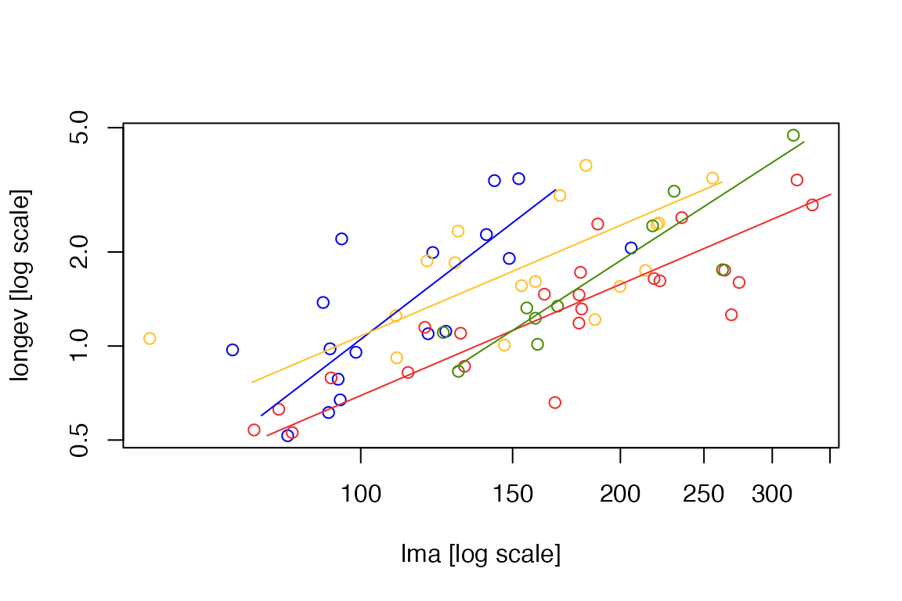
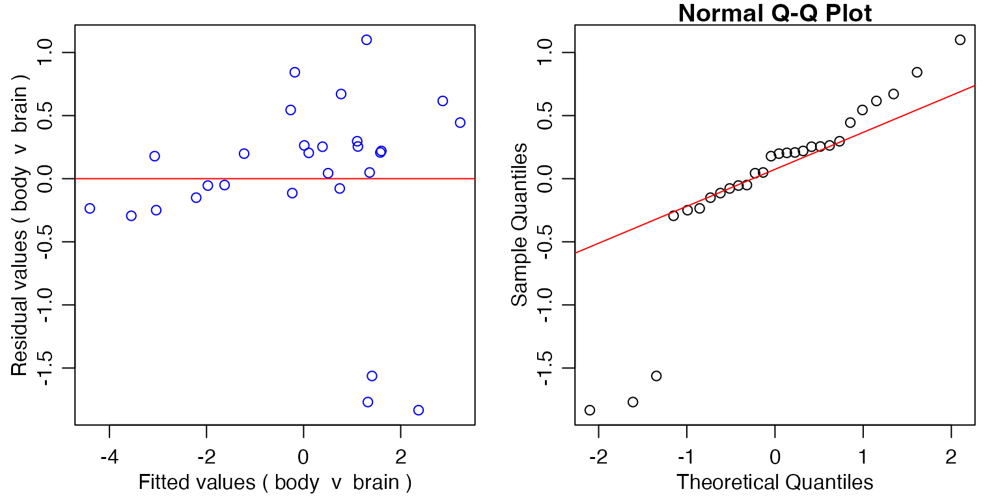

Chapter 13 -- Allometric line-fitting -- Exercise solutions and Code Boxes
David Warton
2022-07-12
Chapter13Solutions.RmdExercise 13.1: Brain size-body size relationships
Does brain size scale as the 2/3 power of body size?
How should we analyse the data to answer this research question?
We are primarily interested in the slope coefficient, and do not have a predictor and a response, rather we have two response variables. So we want to avoid regression to the mean and should look at this as a multivariate problem, and use principal components analysis (or related methods).
Exercise 13.2: Leaf economics and environment
How steep is the slope of the line representing the leaf economics spectrum? It is steeper than one? Does the steepness of the line vary across environments?
What method should [Ian] use to do this?
We are primarily interested in the slope coefficients, and do not have a predictor and a response, rather we have two response variables. So we want to avoid regression to the mean and should look at this as a multivariate problem, and use principal components analysis (or related methods) and generalisations designed to compare slopes of several such axes.
Code Box 13.1: Linear models of the brain size-body size data
library(MASS)
data(Animals)
ftBrainBody=lm(log(brain)~log(body),data=Animals)
confint(ftBrainBody)
#> 2.5 % 97.5 %
#> (Intercept) 1.7056829 3.4041133
#> log(body) 0.3353152 0.6566742This confidence interval does not cover 2/3 so suggests
the data do not fit the 2/3 power law.
ftBodyBrain=lm(log(body)~log(brain),data=Animals)
confint(ftBodyBrain)
#> 2.5 % 97.5 %
#> (Intercept) -3.6396580 0.3396307
#> log(brain) 0.8281789 1.6218881Flipping x and y axes, this confidence
interval does cover 3/2, which suggests that the
data do fit the 2/3 power law!
Code Box 13.2: Testing if the brain-body mass slope is 2/3
library(smatr)
sma_brainBody = sma(brain~body, data=Animals,log="xy",slope.test=2/3)
sma_brainBody
#> Call: sma(formula = brain ~ body, data = Animals, log = "xy", slope.test = 2/3)
#>
#> Fit using Standardized Major Axis
#>
#> These variables were log-transformed before fitting: xy
#>
#> Confidence intervals (CI) are at 95%
#>
#> ------------------------------------------------------------
#> Coefficients:
#> elevation slope
#> estimate 0.8797718 0.6363038
#> lower limit 0.4999123 0.4955982
#> upper limit 1.2596314 0.8169572
#>
#> H0 : variables uncorrelated
#> R-squared : 0.6076101
#> P-value : 1.0169e-06
#>
#> ------------------------------------------------------------
#> H0 : slope not different from 0.6666667
#> Test statistic : r= -0.07424 with 26 degrees of freedom under H0
#> P-value : 0.70734Here we got \(r=-0.07\), \(P=0.71\) and conclude there is no evidence
against the 2/3 power law. Note that 2/3 is towards the
centre of the confidence interval for the SMA slope.
Reversing the axes:
sma(body~brain, data=Animals,log="xy",slope.test=3/2)
#> Call: sma(formula = body ~ brain, data = Animals, log = "xy", slope.test = 3/2)
#>
#> Fit using Standardized Major Axis
#>
#> These variables were log-transformed before fitting: xy
#>
#> Confidence intervals (CI) are at 95%
#>
#> ------------------------------------------------------------
#> Coefficients:
#> elevation slope
#> estimate -1.3826286 1.571576
#> lower limit -2.2584635 1.224054
#> upper limit -0.5067936 2.017763
#>
#> H0 : variables uncorrelated
#> R-squared : 0.6076101
#> P-value : 1.0169e-06
#>
#> ------------------------------------------------------------
#> H0 : slope not different from 1.5
#> Test statistic : r= 0.07424 with 26 degrees of freedom under H0
#> P-value : 0.70734We get exactly the same test results: \(r=-0.07\), \(P=0.71\) and reach the same conclusion.
Note that 3/2 is towards the centre of the confidence
interval for the SMA slope.
Is this what you would have expected? Is there evidence against the 2/3 power law?
This is as expected, (S)MA is invariant under flipping of
x and y. As above there is no evidence against
the 2/3 power law.
Code Box 13.3: Comparing allometric slopes for Ian’s data using
smatr
data(leaflife)
leafSlopes = sma(longev~lma*site, log="xy", data=leaflife)
summary(leafSlopes)
#> group n r2 pval Slope Slope_lowCI Slope_highCI Int
#> 1 1 17 0.5039152 1.411320e-03 2.119823 1.4518161 3.095192 -4.218236
#> 2 2 17 0.3407371 1.389091e-02 1.176888 0.7631512 1.814929 -2.321737
#> 3 3 23 0.7392636 1.461968e-07 1.182538 0.9398479 1.487896 -2.523634
#> 4 4 10 0.8065100 4.170919e-04 1.786551 1.2572572 2.538672 -3.837710
#> Int_lowCI Int_highCI Slope_test Slope_test_p Elev_test Elev_test_p
#> 1 -5.903527 -2.532946 NA NA NA NA
#> 2 -3.475559 -1.167915 NA NA NA NA
#> 3 -3.135266 -1.912003 NA NA NA NA
#> 4 -5.291926 -2.383495 NA NA NA NA
plot(leafSlopes)
Code Box 13.4: Comparing elevations of allometric lines for Ian’s
low soil nutrients data using smatr
leaf_low_soilp = subset(leaflife, soilp == "low")
leafElev = sma(longev~lma+rain, log="xy", data=leaf_low_soilp)
leafElev
#> Call: sma(formula = longev ~ lma + rain, data = leaf_low_soilp, log = "xy")
#>
#> Fit using Standardized Major Axis
#>
#> These variables were log-transformed before fitting: xy
#>
#> Confidence intervals (CI) are at 95%
#>
#> ------------------------------------------------------------
#> Results of comparing lines among groups.
#>
#> H0 : slopes are equal.
#> Likelihood ratio statistic : 2.367 with 1 degrees of freedom
#> P-value : 0.12395
#> ------------------------------------------------------------
#>
#> H0 : no difference in elevation.
#> Wald statistic: 6.566 with 1 degrees of freedom
#> P-value : 0.010393
#> ------------------------------------------------------------
#>
#> Use the summary() function to print coefficients by group.Code Box 13.5: Residual plots for brain-body size relationship
par(mfrow=c(1,2),mar=c(3,3,1,1),mgp=c(1.75,0.75,0))
{plot(sma_brainBody,which="residual") # residual plot
abline(a=0,b=0,col="red")}
qqnorm(residuals(sma_brainBody))
qqline(residuals(sma_brainBody), col="red")
Code Box 13.6: Robust SMA for brain-body size relationship
sma_brainBodyRobust = sma(brain~body, data=Animals,log="xy",
slope.test=2/3,robust=TRUE)
sma_brainBodyRobust
#> Call: sma(formula = brain ~ body, data = Animals, log = "xy", slope.test = 2/3,
#> robust = TRUE)
#>
#> Fit using Standardized Major Axis
#>
#> These variables were log-transformed before fitting: xy
#>
#> Confidence intervals (CI) are at 95%
#>
#> ------------------------------------------------------------
#> Coefficients:
#> elevation slope
#> estimate 0.8367912 0.7541820
#> lower limit 0.6056688 0.6452409
#> upper limit 1.0679136 0.8815164
#>
#> H0 : variables uncorrelated
#> R-squared : 0.6076101
#> P-value : 1.0169e-06
#>
#> ------------------------------------------------------------
#> H0 : slope not different from 0.6666667
#> Test statistic : r= 0.3458 with 26 degrees of freedom under H0
#> P-value : 0.11673
plot(brain~body,data=Animals,log="xy")
abline(sma_brainBody, col="red")
abline(sma_brainBodyRobust, col="blue")Notice that this line is slightly steeper than previously, because it is less sensitive to the outliers below the line, also note that the confidence interval is narrower. Is this what you expected to happen?
Yes – the outliers were towards the bottom-right, so giving them less weight in analysis should drag the line up towards the rest of the data. It makes sense that CIs are narrower because outliers make variances and covariances inefficient estimators, so by using a method that can better handle outliers we can get more precise estimates.
Exercise 13.3: Outlier sensitivity for the brain-body mass data
Repeat the analyses of the brain-body mass data, in Code Boxes
13.2 and 13.6, excluding the three dinosaur species from analysis by
using data=AnimalsSnipped[-c(6,16,26),].
AnimalsSnipped=Animals[-c(6,16,26),]
sma_brainBody = sma(brain~body, data=AnimalsSnipped,log="xy",slope.test=2/3)
sma_brainBody
#> Call: sma(formula = brain ~ body, data = AnimalsSnipped, log = "xy",
#> slope.test = 2/3)
#>
#> Fit using Standardized Major Axis
#>
#> These variables were log-transformed before fitting: xy
#>
#> Confidence intervals (CI) are at 95%
#>
#> ------------------------------------------------------------
#> Coefficients:
#> elevation slope
#> estimate 0.8927447 0.7835628
#> lower limit 0.7115619 0.6946736
#> upper limit 1.0739275 0.8838260
#>
#> H0 : variables uncorrelated
#> R-squared : 0.9216991
#> P-value : 3.2428e-14
#>
#> ------------------------------------------------------------
#> H0 : slope not different from 0.6666667
#> Test statistic : r= 0.5016 with 23 degrees of freedom under H0
#> P-value : 0.010623This suddenly gives a significant effect (\(r=0.50\), \(P=0.01\)), with the slope having jumped up
from 0.64 to 0.78. Using robust methods:
sma_brainBodyRobust = sma(brain~body, data=AnimalsSnipped,log="xy",
slope.test=2/3,robust=TRUE)
sma_brainBodyRobust
#> Call: sma(formula = brain ~ body, data = AnimalsSnipped, log = "xy",
#> slope.test = 2/3, robust = TRUE)
#>
#> Fit using Standardized Major Axis
#>
#> These variables were log-transformed before fitting: xy
#>
#> Confidence intervals (CI) are at 95%
#>
#> ------------------------------------------------------------
#> Coefficients:
#> elevation slope
#> estimate 0.8844792 0.7709489
#> lower limit 0.7222772 0.6990277
#> upper limit 1.0466812 0.8502700
#>
#> H0 : variables uncorrelated
#> R-squared : 0.9216991
#> P-value : 3.2428e-14
#>
#> ------------------------------------------------------------
#> H0 : slope not different from 0.6666667
#> Test statistic : r= 0.5261 with 23 degrees of freedom under H0
#> P-value : 0.005345Is robust SMA less sensitive to the dinosaur outliers? Is this what you expected?
The results changed in both cases, but in a less dramatic way when
using robust SMA. The robust SMA slope only changed from
0.75 to 0.77 on outlier removal, whereas the
regular SMA slope changed from 0.64 to 0.78.
In both cases there is significant evidence against the 2/3 power law
after outlier removal, but in the robust case, this change was less
dramatic. It is expected that robust SMA would be less sensitive to
outliers.
Exercise 13.4: Robust allometric line fitting for Ian’s leaf data
Repeat the analysis of Ian’s leaf economics data, as in Code Boxes 13.3-13.4, using robust=TRUE. Do results work out differently?
leafSlopes = sma(longev~lma*site, log="xy", data=leaflife, robust=TRUE)
summary(leafSlopes)
#> group n r2 pval Slope Slope_lowCI Slope_highCI Int
#> 1 1 17 0.5039152 1.411320e-03 2.411612 1.6946943 3.431812 -4.811259
#> 2 2 17 0.3407371 1.389091e-02 1.401976 0.9552956 2.057517 -2.824595
#> 3 3 23 0.7392636 1.461968e-07 1.151046 0.9373065 1.413526 -2.448110
#> 4 4 10 0.8065100 4.170919e-04 1.925544 1.3614601 2.723342 -4.142043
#> Int_lowCI Int_highCI Slope_test Slope_test_p Elev_test Elev_test_p
#> 1 -6.589002 -3.033515 NA NA NA NA
#> 2 -4.040935 -1.608255 NA NA NA NA
#> 3 -2.979219 -1.917001 NA NA NA NA
#> 4 -5.680918 -2.603167 NA NA NA NAThis result is fairly similar, although there is stronger evidence now that the slopes are not the same, perhaps because the slope for group 1 is now noticeably steeper.
leaf_low_soilp = subset(leaflife, soilp == "low")
leafElev = sma(longev~lma+rain, log="xy", data=leaf_low_soilp, robust=TRUE)
leafElev
#> Call: sma(formula = longev ~ lma + rain, data = leaf_low_soilp, log = "xy",
#> robust = TRUE)
#>
#> Fit using Standardized Major Axis
#>
#> These variables were log-transformed before fitting: xy
#>
#> Confidence intervals (CI) are at 95%
#>
#> ------------------------------------------------------------
#> Results of comparing lines among groups.
#>
#> H0 : slopes are equal.
#> Likelihood ratio statistic : 1.84 with 1 degrees of freedom
#> P-value : 0.17498
#> ------------------------------------------------------------
#>
#> H0 : no difference in elevation.
#> Wald statistic: 6.017 with 1 degrees of freedom
#> P-value : 0.014166
#> ------------------------------------------------------------
#>
#> Use the summary() function to print coefficients by group.When comparing elevation of lines fitted to low soil nutrient sites, there does not seem to be evidence of a difference due to rainfall.